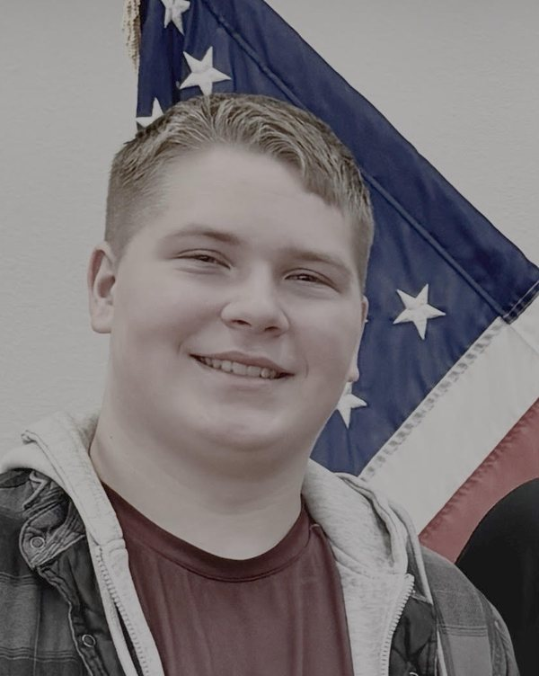
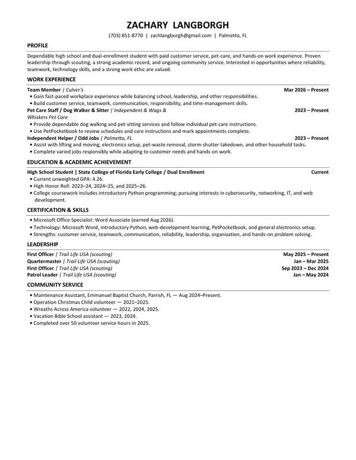

About Me

My name is Zachary Langborgh, and I am a high school and dual-enrollment student pursuing an education in cybersecurity. I chose this field because I am interested in computers, technology, and learning how computer systems and networks can be protected. As I continue my education, I hope to develop the technical knowledge and hands-on skills needed to begin a successful career in technology.
Alongside school, I work in customer service, provide pet-care services, and complete independent household jobs. These responsibilities have taught me the importance of reliability, teamwork, communication, time management, and adapting to the needs of others. I believe these skills will support me as I continue learning and eventually begin working in cybersecurity and information technology.
I am building this website to strengthen my web-development skills and create a professional online portfolio that can grow with my education and career.
My Goals
My educational goal is to complete my cybersecurity studies while developing a strong understanding of computers, networking, and information security. I want to gain practical experience that will prepare me for future opportunities in cybersecurity. Over time, I hope to earn industry certifications and contribute to an organization that values security, reliability, and continuous improvement.
My Technical Interests
The technology field changes constantly, so I am building skills in several connected areas, including cybersecurity, computer networking, information technology, Python, and web development. Learning how these areas work together will help me understand how systems are created and how they can be protected from security threats.
A professional resource I use to learn more about the field is the Cybersecurity and Infrastructure Security Agency careers website. It provides information about cybersecurity careers and the skills used to protect important systems and information.
Experience and Leadership
I balance my education with work at Culver's, pet-care services, and independent household jobs. Through Trail Life USA, I have served as a patrol leader, quartermaster, and first officer. These experiences have helped me develop responsibility, organization, and a practical approach to solving problems.
I earned my Microsoft Office Specialist: Word Associate certification in August 2026, and my college coursework includes introductory Python programming. I also volunteer in my community, including serving as a maintenance assistant at Emmanuel Baptist Church in Parrish.
Click the resume image to view the complete document.
